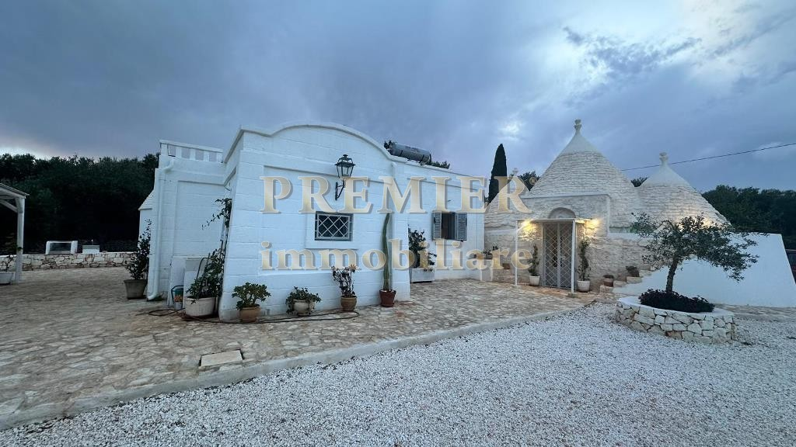

€330.000
Ostuni / C.da Sessana Grande · Puglia · Italy
Exact Puglia brief at a punch-above price: whitewashed conical trulli mixed with a restored casolare around a built private pool on ~6.600 m² fenced olive/fruit land - old mixed with new, not a project or possibilità piscina.
Opened 23 Sep 2026 on Premier Immobiliare; asking €330.000; Rif. 11446 (internal 20549); IN VENDITA; Stato Ristrutturato; Tipo Trulli con piscina. Two renovated units: three-cone trullo (soggiorno, cucina, bedroom, sofa-bed, bath) + casolare (kitchen/dining, bedroom, shower bath); exterior veranda, gazebo, and built pool; land ~6.600 m² fenced with olives/fruit. Hero is conical-trullo courtyard; pool verified in gallery.
Open listing